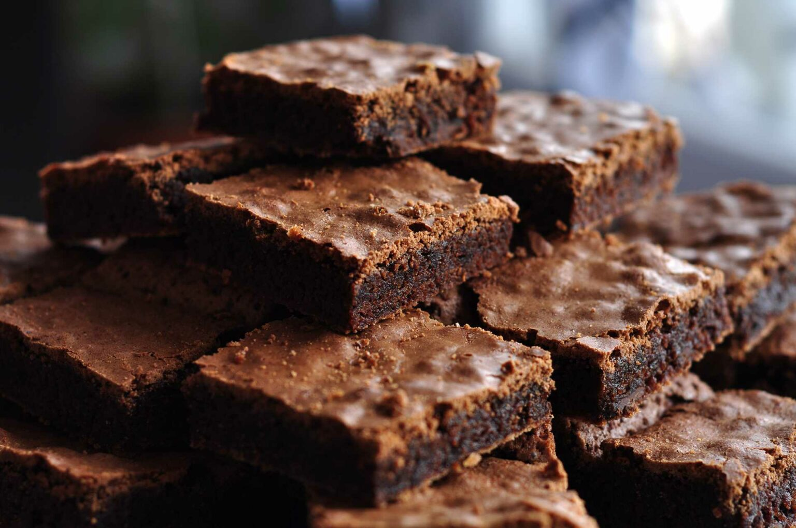

RECETAS FÁCILES

Brownies caseros
- En una cazuela pequeña derrite la mantequilla.
- Vacía la mantequilla derretida a un tazón grande y agrega el azúcar y la sal. Mezcla con un batidor de globo hasta que se incorporen muy bien.
- Agrega los huevos y la vainilla y mezcla con vigor hasta que quede una mezcla homogénea.
- Añade la harina y el cacao y mezcla muy bien hasta obtener una mezcla homogénea y bien consistente.
- Vacía la mezcla en un refractario o charola de 9x12 pulgadas (con mínimo 1.5 pulgadas de altura) que esté previamente engrasada o cubierta con papel para hornear y hornea por 20 minutos a 180ºC (350ºF).
- Deja enfriar por al menos 15 minutos antes de partir.
Pan de almendras
- Poner en remojo las almendras. Al día siguiente, retirar el agua y enjuagarlas.
- Cubrir las pasas con agua y dejarlas en remojo durante al menos 30 minutos. Después, retirar el agua del remojo
- Rallar muy fina la zanahoria. Triturar las pasas junto con las semillas de cilantro en un molinillo de café eléctrico hasta obtener una pasta cremosa. Picar las almendras y las hojas o flores de abedul en trozos grandes con la batidora. Moler las semillas de lino en un molinillo de café eléctrico durante 10 segundos.
- Mezclar todos los ingredientes y amasarlos bien hasta conseguir una masa compacta y maleable.
- Para el proceso de deshidratación necesitará un horno en el que pueda ajustar la temperatura o un deshidratador de alimentos. Lo ideal es que la temperatura máxima no supere los 42 °C. Tras un deshidratado de al menos seis horas, las rebanadas de almendra y abedul adquieren una consistencia esponjosa.
- Dejar que el pan de almendras y abedul se enfríe o servirlo directamente cuando todavía esté caliente. Las hojas de abedul son la decoración perfecta.
Chipá
- Primero pre calentás el horno a 180°.
- Ponés a hervir el agua con la leche, la sal y el aceite. Apenas empiece a hervir apagás el fuego y añadis la fécula de una, se hace un engrudo tremendo pero vos seguí mezclando con una cuchara de madera.
- Dejás que se enfrie un toque (podés pasar la mezcla a un bowl si querés hacerlo más rápido) y le agregás el huevo.
- Por último le añadís el queso, unis todo y untandote un poco de aceite en las manos, empezás a hacer las bolitas.
- Podés hacerlas más grandes para que sean tipo el “pao de queijo” brasilero o más chiquitas para los chipá clásicos.
- Los ponés en una fuente para horno, dejando espacio entre ellos porque crecen, y los horneás durante unos 20 o 25 minutos, o hasta que los veas bien dorados.
- Los dejás enfriar un toque (sí podés) y listo, a disfrutar de la receta de chipá caseros.